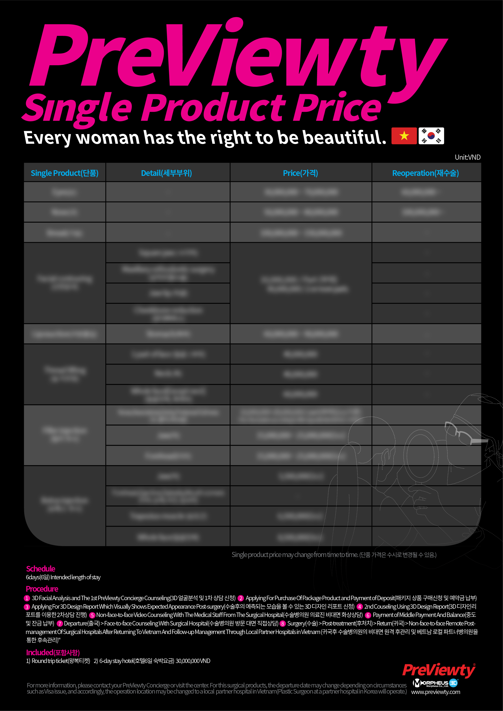

Công nghệ 3D
Scanning Technology
đầu tiên trên thế giới,
dẫn đầu thị trường
phẫu thuật thẩm mỹ Việt Nam


Ứng dụng
công nghệ tiên tiến
trong tư vấn
Thông qua tính năng
phân tích khuôn mặt 3D
dựa trên công nghệ tiên tiến
độc quyền của Morpheus 3D,
cung cấp tư vấn phân tích chuyên sâu
dựa trên tình trạng khuôn mặt thực tế
hiện tại của khách hàng
Design Report
Dựa trên data khách hàng
đã phân tích, cung cấp dữ liệu
phân tích hình ảnh mô phỏng trước - sau
dành riêng cho khách hàng
dưới dạng Design Report 1:1


PreViewty Service


PreViewty Concierge đã sẵn sàng
trở thành nơi khách hàng muốn tìm đến,
luôn luôn lắng nghe
câu chuyện của khách hàng
Dựa trên công nghệ tiên tiến
độc quyền của Morpheus,
chúng tôi cung cấp ‘Tư vấn phân tích
khuôn mặt 3D’, ‘Design Report’
ứng dụng công nghệ
mô phỏng phẫu thuật, ‘PreViewty App’
để quý khách hàng có thể theo dõi
mọi lúc mọi nơi.


PreViewty Service
chính là dấu chân đồng hành cùng bạn tới cuộc sống thành công.

PreViewty Concierge Center

21 P. Duy Tân, Dịch Vọng Hậu,
Cầu Giấy, Hà Nội, Việt Nam
PreViewty Concierge
Leader Profile
Đặng Thị Hạnh
Mobile/Zalo +84 963 124 300
Email victory@previewty.com
Tầng 6, Tòa nhà IDMC, Số 21 phố Duy Tân,
Phường Dịch Vọng Hậu, Quận Cầu Giấy, Hà Nội, Việt Nam
Nguyễn Thị Chung
Mobile/Zalo +84 976 494 822
Email mari@previewty.com
Tầng 6, Tòa nhà IDMC, Số 21 phố Duy Tân,
Phường Dịch Vọng Hậu, Quận Cầu Giấy, Hà Nội, Việt Nam
Đinh Thị Minh Huyền
Mobile/Zalo +84 968 997 555
Email lisa@previewty.com
Tầng 6, Tòa nhà IDMC, Số 21 phố Duy Tân,
Phường Dịch Vọng Hậu, Quận Cầu Giấy, Hà Nội, Việt Nam
Nguyễn Thị Thu Hường
Mobile/ Zalo +84 372 059 555
Email mina@previewty.com
Tầng 6, tòa nhà IDMC, Số 21 phố Duy Tân, Phường Dịch Vọng Hậu,
Quận Cầu Giấy, Hà Nội, Việt Nam
PreViewty
Package Price


PreViewty
Single Product Price

Quyền của bệnh nhân (khách hàng) có nghĩa là bệnh nhân phải được bảo vệ và tiếp nhận điều trị một cách hợp pháp, đúng với luân lý và đạo đức. Theo Khoản 1 Điều 1-3 của Luật y tế hiện hành Hàn Quốc, bệnh nhân được đảm bảo các quyền lợi sau.
1. Quyền tiếp nhận điều trị Bệnh nhân có quyền nhận được các dịch vụ y tế và sức khỏe phù hợp để bảo vệ và nâng cao sức khỏe của bản thân, không bị xâm phạm quyền lợi về sức khỏe vì lý do như giới tính, tuổi tác, tôn giáo, địa vị và hoàn cảnh kinh tế, v.v. và nhân viên y tế không thể từ chối điều trị nếu không có lý do chính đáng.
2. Quyền được biết và quyền tự quyết Người bệnh có quyền nghe giải thích đẩy đủ và hỏi chi tiết bác sĩ phụ trách và y tá về các nội dung liên quan đến tình trạng bệnh tật, phương pháp điều trị, tác dụng phụ, v.v. hay kết quả dự kiến và chi phí điều trị. Bệnh nhân có quyền đồng ý hoặc từ chối với điều này, và có quyền ngừng hoặc từ chối tiếp nhận điều trị trong phạm vi cho phép.
3. Quyền được bảo mật thông tin Bệnh nhân sẽ không bị xâm phạm về các thông tin bảo mật về thân thể, sức khỏe liên quan đến điều trị y tế. Nhân viên y tế và các bệnh viện đối tác không được tiết lộ hoặc công khai thông tin bảo mật trừ khi có sự đồng ý của bệnh nhân hoặc theo quy định của pháp luật, chẳng hạn như điều tra tội phạm.
4. Quyền được đề nghị, tham vấn và hòa giải Bệnh nhân có thể đưa ra ý kiến về những vấn đề mà bệnh viện cần cải thiện, trong trường hợp có tranh chấp liên quan đến dịch vụ y tế, bệnh nhân có quyền đăng ký tham vấn và hòa giải với Cơ quan trọng tài và hòa giải tranh chấp y tế Hàn Quốc.
5. Quyền được bảo vệ an toàn thân thể Bệnh nhân có quyền được bảo vệ trước những rủi ro có thể xảy ra trong bệnh viện và mưu cầu sự an tâm.
6. Quyền được tôn trọng Bệnh nhân có quyền được tôn trọng về các giá trị quan, đức tin và nhu cầu tôn giáo của họ.
Bảo vệ quyền và lợi ích của người bệnh (khách hàng)
1. Các tổ chức y tế thu hút bệnh nhân nước ngoài phải đăng tải các quyền lợi của bệnh nhân theo Khoản 3 Điều 4 của 「Luật y tế」 bằng tiếng nước ngoài theo quy định của pháp luật của của Bộ Y tế và Phúc lợi, và đưa ra các phương pháp để bệnh nhân nước ngoài có thể biết các vấn đề liên quan như soạn thảo riêng và hướng dẫn từng hạng mục sau. 1) Chẩn đoán bệnh nhân nước ngoài, phương pháp điều trị và các tác dụng phụ có thể xảy ra
2) Hợp đồng điều trị y tế và chi phí y tế dự kiến theo mẫu do Bộ trưởng Bộ Y tế và Phúc lợi quy định
3) Thủ tục giải quyết tranh chấp trong trường hợp xảy ra tai nạn y tế
Trách nhiệm và Nghĩa vụ của PreViewty Concierge
1. PreViewty Concierge는 고객(환자)을 위해서 파트너 병의원이 을의 인간으로서의 존엄과 가치를 존중하고, 기본적인 인권 보장, 안전하고 수준 높은 의료서비스를 받을 수 있도록 돕는 역할을 한다. Previewty Concierge đóng vai trò giúp khách hàng (bệnh nhân) nhận được sự tôn trọng về giá trị và tôn nghiêm của con người, đảm bảo nhân quyền cơ bản, nhận được các dịch vụ y tế an toàn và chất lượng cao từ các bệnh viện đối tác.
2. PreViewty Concierge은 고객(환자)에게 안전하고 만족스러운 서비스를 제공하기 위하여 파트너 병의원 알선 및 안내운〮송숙〮박 등 한국의료관광계획의 수립 및 실행과정에서 맡은 바 임무를 충실히 수행해야한다. Để cung cấp dịch vụ an toàn và hài lòng cho khách hàng (bệnh nhân), Previewty Concierge phải trung thực thực hiện các nghĩa vụ của mình trong quá trình thiết lập và thực hiện kế hoạch du lịch y tế Hàn Quốc, chẳng hạn như hướng dẫn về các bệnh viện đối tác, di chuyển, lưu trú, v.v.
3. PreViewty Concierge은 고객(환자)에게 본 계약에 해당하는 의료서비스 및 컨시어지 서비스 제반에 대하여 충분히 설명해야 한다. Previewty Concierge phải giải thích đầy đủ cho khách hàng (bệnh nhân) tất cả các dịch vụ y tế và dịch vụ Concierge được đề cập trong hợp đồng này.
4. PreViewty Concierge은 고객(환자)에게 3D 얼굴 분석 및 1차 상담을 토대로 수술 후에 예측되는 모습을 볼 수 있는 3D 디자인 리포트를 이용하여 2차 상담을 진행한다. 3D 디자인 리포트를 최대한 반영하여 수술 계획을 수립하고 실제 수술에 최대한 적용하지만, 수술 후 예측되는 모습은 실제 수술 결과와 상이할 수 있으며, 을은 이에 대한 이의를 제기하지 않는다. Previewty Concierge tiến hành buổi tư vấn thứ hai cho khách hàng (bệnh nhân) bằng cách sử dụng báo cáo thiết kế 3D cho phép khách hàng nhìn thấy hình ảnh dự kiến sau phẫu thuật dựa trên phân tích khuôn mặt 3D và lần tư vấn đầu tiên. Mặc dù phác đồ điều trị được thiết lập dựa trên kết quả phản ánh của bản báo cáo thiết kế 3D cũng như áp dụng tối đa trong ca phẫu thuật, nhưng diện mạo dự đoán sau phẫu thuật vẫn có thể khác với kết quả phẫu thuật thực tế, và khách hàng (bệnh nhân) không phản đối điều này.
5. PreViewty Concierge은 고객(환자)에게 파트너 병의원과의 비대면상담을 위해 통역사를 배치하여 비대면 상담 전 의료서비스 항목별 수가표를 안내하고 파트너 병의원을 소개한다. Previewty Concierge sắp xếp thông dịch viên cho khách hàng (bệnh nhân) để tư vấn trực tuyến với bệnh đối tác. Trước khi tiến hành tư vấn trực tuyến, Previewty Concierge hướng dẫn và giới thiệu bệnh viện đối tác cũng như bảng giá theo từng hạng mục dịch vụ cho khách hàng (bệnh nhân).
6. PreViewty Concierge은 시수술절차, 분쟁해결제도, 개인정보보호 및 환자의 권리와 의무 등에 대해 고객(환자)에게 이해할 수 있도록 설명한다. Previewty Concierge giải thích quy trình phẫu thuật, chế tài giải quyết tranh chấp, bảo mật thông tin cá nhân và các quyền và nghĩa vụ của khách hàng (bệnh nhân) cho khách hàng (bệnh nhân) hiểu.
7. 고개(환자)이 패키지 상품 구매신청 및 예약금을 납부할 경우 PreViewty Concierge은 고객(환자)에게 수술병의원 의료진 비대면 화상상담을 신청하여 의료진과 고객(환자) 간 비대면 상담을 할 수 있도록 한다. Trường hợp khách hàng (bệnh nhân) đăng ký mua gói sản phẩm và thanh toán tiền đặt cọc, PreViewty Concierge đăng ký cho khách hàng (bệnh nhân) tư vấn trực tuyến với bệnh viện đối tác và hỗ trợ để khách hàng (bệnh nhân) có thể tiếp nhận tư vấn trực tuyến với nhân viên y tế.
8. PreViewty Concierge은 고객(환자)이 의료서비스를 안전하게 받을 수 있도록 시수술 전 진료, 치료 등 예약서비스, 예약된 병원으로 배정 및 안내, 통역서비스, 기타 제반서비스 등 컨시어지 서비스를 제공하며 을이 시수술 후 귀국하여 수술병의원의 비대면 원격 후관리 및 베트남 로컬 파트너병의원을 통해 후속관리 서비스를 요청할 경우 적극 협조한다. Để khách hàng (bệnh nhân) nhận được các dịch vụ y tế một cách an toàn, PreViewty Concierge cung cấp các dịch vụ Concierge như đặt lịch tư vấn, thăm khám trước phẫu thuật, chỉ định và hướng dẫn đến các bệnh viện đã đặt lịch, dịch vụ thông dịch và tất cả các dịch vụ khác. Khi khách hàng (bệnh nhân) trở về từ Hàn Quốc sau phẫu thuật, nếu khách hàng (bệnh nhân) yêu cầu dịch vụ theo dõi trực tuyến với bệnh viện thực hiện phẫu thuật và dịch vụ chăm sóc hậu phẫu thông qua các bệnh viện đối tác tại Việt Nam thì PreViewty Concierge sẽ tích cực hỗ trợ.
9. PreViewty Concierge은 별도의 후속관리팀을 구성하여 고객(환자)의 후속관리 서비스에 대한 요청에 즉각적으로 대응할 수 있도록 조치한다. PreViewty Concierge thiết lập riêng đội ngũ chăm sóc hậu phẫu để thực hiện các biện pháp đáp ứng ngay lập tức yêu cầu của khách hàng (bệnh nhân) về dịch vụ chăm sóc hậu phẫu.
10. 의료사고 분쟁 해결과정에서 파트너 병의원과 외국인환자 간 소통에 적극 협조하고 의료사고 재발 방지를 위한 진료서비스 개선과정에 협력한다. Tích cực hợp tác trao đổi thông tin liên lạc giữa bệnh viện đối tác và bệnh nhân nước ngoài trong quá trình giải quyết tranh chấp tai nạn y tế, hợp tác trong quá trình cải thiện dịch vụ y tế nhằm ngăn ngừa tai nạn y tế tái phát.
Trách nhiệm và Nghĩa vụ của Bệnh viện Đối tác
1. Bệnh viện đối tác phải nỗ lực bảo vệ và nâng cao sức khỏe của Bên B bằng cách tôn trọng giá trị và tôn nghiêm của con người, đồng thời tiến hành điều trị tốt nhất cho Bên B.
2. Bệnh viện đối tác cố gắng cung cấp các dịch vụ y tế tốt nhất cho Bên B.
3. Bệnh viện đối tác là cơ sở y tế thu hút bệnh nhân nước ngoài đã đăng ký theo Điều 6 của 「Luật hỗ trợ mở rộng y tế ở nước ngoài và thu hút bệnh nhân quốc tế」 của Luật y tế Hàn Quốc.
4. Các bệnh viện đối tác phải bảo đảm vấn đề bảo mật và cuộc sống đời tư của bệnh nhân liên quan đến thăm khám và điều trị.
5. Bệnh viện đối tác cần biểu đạt ý kiến về việc cải tiến chế độ chống lại lợi ích của người bệnh và các chính sách chưa phù hợp của nhà nước, cố gắng làm tròn trách nhiệm của mình đối với người bệnh.
6. Bệnh viện đối tác chỉ định và điều hành bộ phận, nhân viên phụ trách trợ giúp cho bên B về các dịch vụ y tế cũng như hướng dẫn cho bên B về phương pháp điều trị dự kiến và chi phí điều trị. Phương pháp điều trị dự kiến và chi phí điều trị do bệnh viện đối tác hướng dẫn chỉ mang tính chất tạm thời, bệnh viện đối tác có thể thay đổi phương pháp điều trị thực tế và chi phí điều chị cho Bên B trong phạm vi cần thiết đáng kể.
7. Dựa trên hồ sơ của bên B như bệnh án v.v., trong trường hợp cần thiết, bệnh viện đối tác cấp “Giấy đặt lịch thăm khám” để bên B được tiếp nhận điều trị tại cơ sở; và khi đã cấp " Giấy đặt lịch thăm khám", bệnh viện đối tác không được từ chối cung cấp dịch vụ y tế cho bên B mà không có lý do chính đáng.
8. Bệnh viện đối tác bố trí thông dịch viên hoặc điều phối viên y tế nhằm hỗ trợ quá trình điều trị và thăm khám của bên B.
Hướng dẫn thủ tục 절차안내
| 단계 Giai đoạn |
절차 Quy trình |
주요 서비스 Dịch vụ chính |
|---|---|---|
|
출국 전 Trước khi xuất cảnh |
상담 Tư vấn |
• 모르페우스3D 스캔 후 1차/2차 상담 Tư vấn lần thứ nhất / thứ hai sau khi scan Morpheus 3D - 인공지능 기반의 3차원 얼굴 분석 Phân tích khuôn mặt 3D dựa trên trí tuệ nhân tạo AI - 시수술예측시스템을 통한 환자 맞춤형 상품 제안 Đề xuất các sản phẩm phù hợp cho bệnh nhân thông qua hệ thống mô phỏng diện mạo sau phẫu thuật - AI 리포트 제공 Cung cấp báo cáo AI • 대한민국 파트너 병의원 및 시수술 상품 정보 제공 Cung cấp thông tin sản phẩm phẫu thuật thẩm mỹ và các bệnh viện đối tác Hàn Quốc • 대한민국 파트너 병의원 비대면 원격 상담 Tư vấn trực tuyến với bệnh viện đối tác Hàn Quốc - 컨시어지, 통역사 무상 배치 Bố trí miễn phí nhân viên Concierge, thông dịch viên • 수가 견적 제공 Cung cấp bảng báo giá • 진료 일정 확정 Xác nhận lịch trình điều trị |
|
예약 Đặt lịch hẹn |
• 수술상품 예약 Đặt lịch phẫu thuật • 여권 등 서류 요청 및 비자 신청 지원 Hỗ trợ yêu cầu các tài liệu như hộ chiếu và đơn xin thị thực • 항공권, 숙소, 차량, 통역 예약 Đặt vé máy bay, chỗ ở, phương tiện di chuyển và thông dịch viên • 기타 컨시어지 서비스 예약 Đặt dịch vụ Concierge khác |
|
|
예약확인 Xác nhậnlịch hẹn |
• 파트너 병의원 및 컨시어지 예약 상황 확인 Kiểm tra tình trạng đặt lịch của các bệnh viện đối tác và dịch vụ Concierge - 수술 상품 중도금/잔금 지불 완료 Hoàn tất thanh toán số tiền còn lại của gói sản phẩm - 컨시어지 서비스 수수료 지불 완료 Hoàn tất thanh toán phí dịch vụ Concierge • 진료 시 주의사항 전달 Truyền đạt các thông tin lưu ý khi tiếp nhận điều trị • 입국 전 건강상태 확인 Kiểm tra tình trạng sức khỏe trước khi nhập cảnh |
| 단계 Giai đoạn |
절차 Quy trình |
주요 서비스 Dịch vụ chính |
|---|---|---|
| 입국 후 Sau khi nhập cảnh |
입국 Nhập cảnh |
• 공항 마중 (피켓) Đón sân bay (Picket) |
| 관광 Tham quan |
• 여행업체 인계 또는 직접 소개 (면세점 쇼핑 및 시티투어) Chuyển giao hoặc giới thiệu trực tiếp cho công ty du lịch (Tour mua sắm miễn thuế và tham quan thành phố) |
|
| 병원 진료 및
서류 발급 Điều trị tại bệnh viện và cấp phát hồ sơ |
• 진료 상담 및 기초 검진 Tư vấn thăm khám và kiểm tra cơ bản • 진료 또는 수술, 약 처방 Điều trị hoặc phẫu thuật, kê đơn thuốc • 회복 및 휴식 Phục hồi và nghỉ ngơi • 진료비 결제 증빙 서류 제공 Cung cấp tài liệu chứng minh đã thanh toán chi phí y tế • 진료기록 발급 지원 Hỗ trợ phát hành hồ sơ bệnh án • 보험청구 업무 지원 Hỗ trợ yêu cầu thanh toán bảo hiểm |
|
| 귀국 Về nước |
출국 Xuất cảnh |
• 출국항공편 스케줄 확인 Kiểm tra lịch trình chuyến bay xuất cảnh • 공항 배웅 Tiễn sân bay |
| 사후관리 Chăm sóc hậu phẫu |
• 대한민국 파트너 병원의 비대면 사후 관리 또는 베트남 로컬
파트너 병원의 대면 사후 관리 Tái khám trực tuyến với Bệnh viện đối tác ở Hàn Quốc hoặc tái khám trực tiếp tại bệnh viện đối tác tại Việt Nam |
PreViewty Concierge 파트너 병의원 안내
Hướng dẫn Bệnh viện Đối tác PreViewty Concierge
※ 모르페우스와 협력한 모든 파트너 병의원은 엄격한 심사하에 대한민국 보건복지부 지정 “외국인환자 유치파트너 병의원”으로 등록 되어있습니다. Tất cả các bệnh viện đối tác hợp tác với Morpheus đều đã được đăng ký với Bộ Y tế và Phúc lợi Hàn Quốc là “Bệnh viện thu hút bệnh nhân nước ngoài” dưới sự kiểm duyệt nghiêm ngặt.
1) JW정원성형외과
주소: 서울특별시 강남구 삼성로 553, 3~7층(삼성동, JW정원성형빌딩)
연락처: +82-2-541-5104
홈페이지: jwbeauty.com
JW Plastic Surgery
Địa chỉ: 553 Samseong-ro, Gangnam-gu, Seoul, South Korea,
tầng 3~7 ( Samseong-dong, Tòa nhà bệnh viện thẩm mỹ JW)
SĐT: +82-2-541-5104
Website: jwbeauty.com
2) JK성형외과
주소: 서울특별시 강남구 논현로 835 (신사동, JK 빌딩)
연락처: +82-2-777-7797
홈페이지: jkplastic.com
JK Plastic Surgery Center
Địa chỉ: 835 Nonhyeon-ro, Gangnam-gu, Seoul, South Korea(Sinsa-dong, tòa nhà JK)
SĐT: +82-2-777-7797
Website: jkplastic.com
3) 우리성형외과
주소: 서울특별시 강남구 테헤란로 312 5,7층 (역삼동, 비젼타워)
연락처: +82-2-3446-0606
홈페이지: woori-ps.com
Woori Plastic Surgery Clinic
Địa chỉ: 312 Teheran-ro, Gangnam-gu, Seoul, South Korea( Yeoksam-dong, Vision Tower)
SĐT: +82-2-3446-0606
Homepage: woori-ps.com
4) 4월31일성형외과
주소: 서울특별시 강남구 논현로 707, 4월31일 빌딩
연락처: +82-2-540-6777
홈페이지: april31.co.kr
April 31 Plastic Surgery
Địa chỉ: Tòa nhà April 31, 707 Nonhyeon-ro, Gangnam-gu, Seoul, South Korea SĐT: +82-2-540-6777
Website: april31.co.kr
5) 원데이치과
주소: 서울특별시 강남구 봉은사로 2길 31, 2층 (역삼동, W빌딩)
연락처: +82-2-070-5052-6008
홈페이지: onedaydent.com
ONEDAY DENTAL CLINIC
Địa chỉ: 31 Bongeunsa-ro 2-gil, Gangnam-gu, Seoul, South Korea, tầng 2( Yeoksam-dong, tòa nhà W)
SĐT: +82-2-070-5052-6008
Website: onedaydent.com
6) DA 성형외과
주소: 서울 강남구 테헤란로 125 지하1,1,2,4~12층
연락처: +82-2-515-4600
홈페이지: https://www.daprs.com
DA Plastic Surgery
Địa chỉ: 125, Teheran-ro, Gangnam-gu, Seoul, Republic of Korea
SĐT: +82-2-515-4600
Website: https://www.daprs.com
7) 서울아산병원
주소: 서울 송파구 올림픽로 43길 88, 서울아산병원
연락처: +82-2-3010-5005
홈페이지: acm.seoul.kr
Asan Medical Center
Địa chỉ: 88 Olympic-ro 43-gil, Songpa-gu, Seoul, South Korea
SĐT: +82-2-3010-5005
Website: acm.seoul.kr
Beauty must go on!
Kính mời quý khách hàng đến với
Previewty Center.